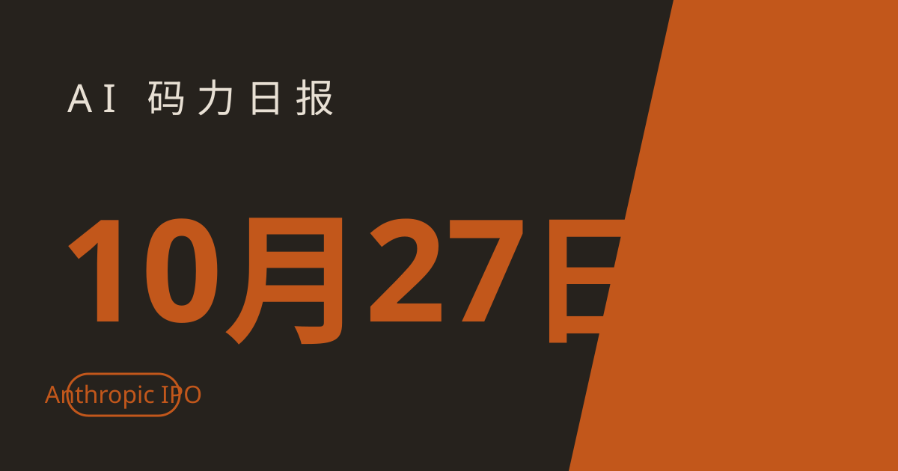

AI 码力日报 · 2026年10月27日

⚡ 一句话速览
- Anthropic 递交 IPO：10 月 26 日公开 S-1 文件，股票代码 ANT，目标估值 1.5 万亿–2 万亿美元，半年营收 163 亿美元、同比涨 13 倍。
- GPT-6.1 Terra 降价一半：OpenAI 10 月 26 日发布中端模型 GPT-6.1 Terra，输入 1 美元/百万 token、输出 5 美元，不到 Claude Sonnet 5.5 的一半价。
- Google 自家榜单上 Argon 仅第五：Android Bench 10 月 26 日更新，Claude Sonnet 5.5 以 40% 通过率登顶，GPT-6.1 Sol 成本只有它的约十六分之一。
- Meta 拟再融 950 亿美元、微软向 6 万人发自愿离职：AI 的账单正在从模型本身转向基建与人力，两家同一天用不同的方式付账。
🤖 今日 AI Coding 动态
OpenAI GPT-6.1 Terra：价格直接腰斩，中端模型的比价时代来了
跟你有啥关系：如果你在 API 上跑日常办公与自动化任务——写提案、读图纸、填表、剪视频——Terra 这次降价直接改写你的账单。OpenAI 10 月 26 日发布 GPT-6.1 Terra，接替 GPT-5.6 Terra，上个月 GPT-6 系列发布时被跳过的中端档这次补上了。定价：输入每百万 token 1 美元、输出 5 美元，缓存输入 0.05 美元，相对上一代直接腰斩；OpenAI 称其标准 API 价也比 GPT-6.1 Sol 低一半。定位是"快而便宜"：详细视觉推理 + 更精准的电脑操作 + 更自然的写作，面向工作日任务与软件自动化控制。跑分方面我只引用已公布的数据：OpenAI 内部易错提示基准上，低推理档错误率从 53.6% 降到 16.7%，最高推理档降到 4.3%；第三方 Artificial Analysis 称其在最高推理档下 Intelligence Index 比上一代高 6 分、单任务成本从 1.40 美元降到 0.40 美元。横向比价更直观：Anthropic 的 Claude Sonnet 5.5 定价是输入 2 美元、输出 12 美元，Terra 不到它的一半。已在 ChatGPT Work、Codex 与 API 同步上线，Plus、Pro、企业与教育订阅可用。我的判断：中端档正在从"够用"变成"比价"——选模型前先把你最高频的任务按百万 token 算一遍账，别只看榜单名次。原文链接、发布详情
Anthropic 递交 IPO：半年营收 163 亿美元，亏损 807 亿美元也敢上
跟你有啥关系：Claude 是你主力工具的话，这份招股书就是它未来几年定价与投入的底牌——IPO 之后，Anthropic 的每一个季度数字都会被公开审视。10 月 26 日，Anthropic 向美国证券交易委员会公开提交 S-1 文件，计划在纳斯达克上市、代码 ANT，最早可能 11 月挂牌，目标估值 1.5 万亿–2 万亿美元，有望成为史上最大 IPO 之一；上次私募估值还是 5 月的 9650 亿美元。招股书里的数字两边都极端：上半年营收 163 亿美元，同比涨约 13 倍，调整后经营利润 16 亿美元（去年同期还亏 18 亿美元）；但净亏损也高达约 807 亿美元——大头是可转债公允价值变动带来的会计 charges，不是现金烧光了，同期账上现金及等价物约 1124 亿美元。算力账单同样吓人：文件披露未来向 SpaceX 采购芯片的支出可达约 1205 亿美元（到 2029 年），向微软、Google、亚马逊的长期算力承诺也都在千亿美元量级。风险章节写得格外直白：先进 AI 若无足够 safeguards，可能带来"灾难性或生存性风险"，模型可能出现"类似勒索"的自保行为。另一面是，Anthropic 与五角大楼关于模型军用的冲突仍在打官司。我的判断：这不是一家"烧钱换增长"的公司，而是一家"先把算力期货买断、再用 IPO 回血"的公司——Claude 的价格战底气和涨价空间，都写在这份文件里了。原文链接、招股书数字梳理
Google Android Bench 更新：自家 Argon 第五，性价比之王是 GPT-6.1 Sol
跟你有啥关系：做 Android 开发选模型，别只看通用榜——Google 这份专为 Android 编码设的榜单，测的是 Android 开发最佳实践与真实编码辅助表现，还附上了成本。10 月 26 日更新后：第一是 Claude Sonnet 5.5，通过率 40%、完成率 80.9%，但跑完榜单的成本高达 1574.90 美元；第二是 10 月初上榜的 Claude Opus 5.5；Google 自己的 Gemini 4 Argon 首秀只排第五，通过率 21.3%、完成率 81.8%、成本 267.70 美元，落在 Claude Fable 5.1 之后——此前已有内部声音称 Argon"在某些编码任务上吃力"，Google 仍为其能力背书。最值得算账的是 GPT-6.1 Sol：通过率 29.3%、完成率 82.8%（完成率甚至高于第一名），成本只要 99.50 美元，不到 Sonnet 5.5 的十六分之一。榜单这次还新增了各模型的推理档位标注，方便你按"质量优先还是成本优先"对号入座。我的判断：Android 场景里，Sonnet 5.5 是质量锚、GPT-6.1 Sol 是性价比锚、Argon 目前还不是答案——等它正式全面铺开再重新评估。原文链接
Meta 拟融 950 亿美元、微软向 6 万人发自愿离职：AI 的账单换了付法
跟你有啥关系：这两条不是模型新闻，却直接决定你明年用的工具涨不涨价、背后的团队稳不稳。10 月 26 日同一天：Meta 提交融资文件，计划通过约 350 亿美元的现有发行（225 亿美元 A 类股远期销售 + 125 亿美元强制可转债优先股）外加一档 2027 年初启动的 600 亿美元市价发行计划，合计约 950 亿美元，支撑其 2026 年 1350 亿–1450 亿美元的资本开支——算力、数据中心、定制芯片与 agent 基础设施。消息一出 Meta 股价跌约 2%，市场对"AI 到底要烧多少钱"开始计较。另一边，微软向约 6 万名员工（约占 22.3 万员工的 27%）发出自愿离职 offer，覆盖美国、加拿大、英国、印度，职级 70 及以下，涉及 AI 体验、Copilot、财务、人力、Xbox、Windows 与设备等团队，12 月 31 日离职、12 月第一周前决定，标准遣散方案、不设硬性人数目标。两件事拼在一起看很清楚：AI 竞赛的瓶颈已经不只是"谁的模型更聪明"，而是谁能同时付得起算力账单、养得起组织——而这两笔账，最终都会回到你订阅的价格里。原文链接、Meta 融资解读
📱 AI 应用新品
Block 的 Dessa：不联网、不靠大模型，本地跑的有情绪语音 AI
是什么：Block（Jack Dorsey 的公司）10 月底推出的 Dessa，一个完全本地运行的语音 AI，能带情绪说话，而且只用人类语音训练、没用文本或大语言模型。解决什么问题：语音助手要么联网调云端大模型、要么声音平板无情绪——Dessa 试图证明"离线 + 有情绪"可以同时成立，演示跑在 M4 Max 上。免费额度/价格：截至撰写时官方未公布面向普通用户的定价与下载渠道，仍处演示与早期阶段，别按"已上线产品"去规划。适合谁：做离线语音、隐私敏感场景（车内、医疗、工业现场）的开发者可以先跟进它的技术路线；普通用户先看演示就好，等正式发布再上手。原文链接
Gemini Live 加了个"+"号：加图、加文件不用先绕一圈
是什么：Google 正在 Android 端 Gemini Live 里推一个小改版：唤出 Live 后左下角多了一个"+"号，点开就是分享屏幕、照片、文件、Drive 的轮盘。解决什么问题：以前要先把东西加到 Gemini 悬浮层再进 Live，多一步；现在一步直达，摄像头按钮挪到了波形旁边。免费额度/价格：Gemini 应用内功能更新，随 Google 应用稳定版 17.68 推送，iOS 暂未上线。适合谁：经常在 Live 对话里贴图、贴文件问问题的 Android 用户，更新应用就能用上；变化虽小，但高频操作省一步就是省时间。原文链接
🐑 今日羊毛
Kiro 免费档：每月 50 credits，用 Claude Sonnet 与开源模型写代码
一句话：AWS 的 spec 驱动 agent IDE Kiro，免费档每月给 50 credits，可用 Claude Sonnet 与一批开源模型，不用先掏钱。
- 怎么薅：打开 Kiro 官网注册免费档，用社交账号或 AWS Builder ID 登录即可，credits 按月给、不滚动到下月。直达链接
- 有效期：长期免费档（截至撰写时），50 credits/月，复杂 agent 任务烧得快
- 适合谁：想试 spec 驱动开发（先写规格再让 agent 实现）、手头没有付费 IDE 的人；50 credits 只够验证工作流，别指望它扛整个项目
CodeRabbit：公开仓库的代码评审永久免费
一句话：AI 代码评审工具 CodeRabbit，对公开仓库永久免费，PR 一提就有人（机）帮你审一遍。
- 怎么薅：把 CodeRabbit 接进你的公开 GitHub 仓库，提 PR 即触发评审，不用绑卡。直达链接
- 有效期：长期免费档（截至撰写时），仅限公开仓库；私有仓库走付费档
- 适合谁：维护开源项目、想给 PR 加一道自动评审的人；审完仍要人工看一遍关键逻辑，机器人审的是面不是魂
WidelAI 送 Claude 创业者免费月：50 个名额，Starter 档免费用一个月
一句话：第三方平台 WidelAI 给早期创业者送一个月 Starter 档（原价 19 美元），含 2000 credits，可在聊天、编码 agent 与云端 agent 里用 Claude Opus、Sonnet、Fable。
- 怎么薅：在 WidelAI 的活动页提交申请，人工审核挑 50 人，获批邮件起 7 天内领取，结账 0 美元、默认不自动续费。直达链接
- 有效期：50 个名额、人工审核（截至撰写时），注意页面要求绑卡，领取前确认续费默认关闭
- 适合谁：正在用 Claude 做产品的早期创业者；先提醒一句：这是第三方平台促销、不是 Anthropic 官方活动，2000 credits 在 Opus 上烧得很快，先规划好一个月的用量再申
⭐ 今日 GitHub 热门项目
Zagitta/gpu-unlock：给 RTX 30 系列解锁满血 FP16/BF16，本地跑模型提速
一句话介绍。解决什么问题：RTX 30 系列显卡的 FP16/BF16 速率被人为限制，本地跑大模型时预填充慢半拍——gpu-unlock 是一个 Linux 内核模块，在原厂驱动加载前恢复满血 FP16/BF16 发放速率，不用改驱动、不用刷 UEFI。⭐ 约 8.1k star，单日新增约 3,902（截至撰写时）。适合：手头有 3090/3080/3070、想在本地跑 LLM 的人；注意用户报告里提速集中在 BF16 GEMM 与 LLM 预填充，内存瓶颈的解码阶段基本没变化，且内核模块有风险，先在备用机上试。项目地址
deepseek-ai/deepseek-harness：DeepSeek 的"一切皆插件"agent 框架
一句话介绍。解决什么问题：agent 工具越接越多、越接越乱——DeepSeek Harness 把"一切皆插件"当架构原则，让工具、模型与工作流都以插件形式挂上去。⭐ 约 26.2 万 star，7 天新增约 8.1k（截至撰写时）。适合：已经在搭 agent 系统、被工具接入折腾过的开发者；先从一个最小插件跑通，再决定要不要把现有工具链迁过去。项目地址
JetBrains/thinkrail：用 pi 在轻量 IDE 里 vibe coding，IDE 跟着你的习惯变
一句话介绍。解决什么问题：vibe coding 要么在重型 IDE 里笨重、要么在终端里没界面——thinkrail 是 JetBrains 的轻量 IDE 尝试，内置 pi agent，IDE 会围绕你的工作方式自我调整。⭐ 约 1.3k star，单日新增约 52（截至撰写时）。适合：喜欢 pi 这类终端 agent、又想要个轻量图形界面的开发者；星数还小，先当实验性工具试，别急着把主力项目迁过去。项目地址
🤗 Hugging Face 热门模型
MiniMaxAI/MiniMax-M3.1-Flash：趋势榜上的 220B 开源旗舰档
是什么：MiniMax 的 M3.1 Flash，220B 参数，图文输入输出，约 15 小时前刚更新、登上 HF 趋势榜。能干嘛：本地跑还是 API 调——220B 的体量决定了它更适合 API 调用或多卡部署，个人单卡别硬上；适合拿来做长上下文与 agent 任务的对比评测。📥 下载量约 8.78k、点赞约 382（截至撰写时）。适合：想在自己服务里接一个国产开源大档模型、或做模型横向评测的开发者；先用 API 档验证效果，确认值得再谈部署成本。模型地址
🛠️ 值得一试的工具：gpu-unlock
是什么：上面 GitHub 栏目提到的 RTX 30 系列 FP16/BF16 解锁内核模块，恢复满血半精度速率。
解决什么痛点：老卡跑本地模型时，预填充阶段被人为限速拖后腿——解锁后 BF16 GEMM 与预填充提速明显，等于把已有硬件的潜力拿回来，不用先换卡。
免费额度：开源项目，免费使用；代价是你要自己承担内核模块的风险与维护。
verdict： 观望——如果你有 3090/3080/3070 且本地跑模型是刚需，值得在备用机上验证一次；但它只加速计算密集环节、解码阶段基本没收益，而且动内核的东西一旦出问题排查成本高，别在主力机上第一个吃螃蟹。
🎓 3 分钟小教程：用 Android Bench 的三列数字，30 秒挑对 Android 编码模型
前置条件：知道你要做的任务类型（质量优先，还是成本优先），能打开 Android Bench 榜单。
- 打开 Google 的 Android Bench 榜单，先看三列：通过率（做对的比例）、完成率（跑完的比例）、成本（跑完榜单的花费）。
- 质量优先就认通过率第一：目前是 Claude Sonnet 5.5（40% 通过率、80.9% 完成率），代价是成本最高——适合"一次做对最重要"的核心模块。
- 成本优先就认"完成率不降、成本骤降"的那个：目前是 GPT-6.1 Sol（82.8% 完成率、成本 99.50 美元），适合批量生成、批量重构这类量大管饱的活。
- 最后用你自己的一个小任务实测：同一段需求分别跑一遍候选模型，只看"能不能直接合入"，榜单名次是参考、合入率才是答案。
预期效果：不再凭感觉选模型——质量与成本各有一个锚，批量任务与核心任务分开用，API 账单先降一档再说。
数据截至撰写时，仅供参考。